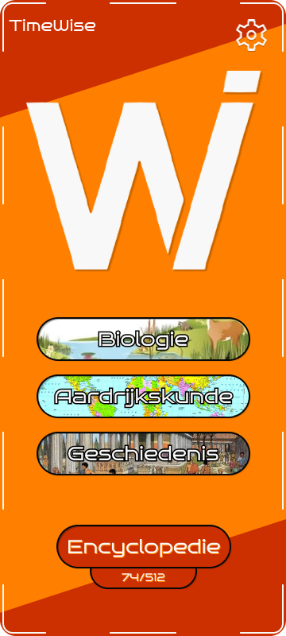

Hoe te gebruiken?
Wanneer je de app opent krijg je een selectiemenu te zien, waarbij je keuze hebt in verschillende vakken. Wanneer je op een desbetreffende vak klikt kom je in een andere selectiemenu. Hierbij ook weer de keuze voor een bepaalde onderwerp wat aansluit aan de leerstof die op dat moment plaats vind.
